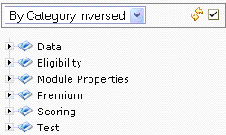
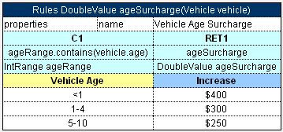

This section briefly introduces rule editor. For detailed information on tasks that can be performed in rule editor, see Chapter 3: Using Rule Editor.
The following topics are included in this section:
Rule editor provides controls for users to browse rule modules and modify table data. This is the default editor opened when a user logs in.
Rule editor resembles the following:
Figure 4: OpenL Web Studio rule editor
Rule editor displays one module at a time. To switch between modules, the user must select a module in the Select Module list box. One rule project can contain several modules.
The left pane displays the module tree providing a view of elements in the currently displayed rule module.
The right pane displays contents of the table selected in the left pane and provides controls for modifying table data, running tests, and checking test results.
The upper part of the window contains a toolbar with the following buttons:
|
Rule editor toolbar buttons |
|
|---|---|
|
Button |
Description |

|
Switches rule editor to business view. For information on view modes, see View Modes. |

|
Switches rule editor to developer view. For information on view modes, see View Modes. |

|
Displays or hides Excel formulas. |

|
Expands or collapses the rule properties section. |

|
Opens a window for uploading projects from user's workspace to design time repository. For information on this operation, see Uploading Projects to Design Time Repository. |
|
|
Opens the search window. For information on performing searches, see Performing a Search. |

|
Refreshes OpenL Web Studio with latest changes in Excel files. |

|
Refreshes OpenL Web Studio with latest changes in user's workspace. |

|
Initiates the table creation wizard. |

|
Initiates a dialog for comparing Excel files. |

|
Switches user interface to repository editor. For general information on repository editor, see Repository Editor. |

|
Opens OpenL Web Studio help. |

|
Logs the user out of OpenL Web Studio. |
OpenL Web Studio provides the following display modes for showing rule elements:
|
Project display modes in rule editor |
|
|---|---|
|
Mode |
Description |
|
Business view |
Project view is business oriented displaying only those project elements relevant to a business user. Structure of the tree is logical rather than physical. Rule tables are organized into categories based on Excel table sheets and the category table property. An example of a module tree displayed in business view sorted by the Category parameter is as follows: 
Figure 5: Module tree in business view sorted by a category An example of the module tree sorted by Category Detailed is as follows: 
Figure 6:Module tree in business view sorted by Category Detailed An example of the module tree sorted by Category Inversed is as follows:

Figure 7:Module tree in business view sorted by Category Inversed OpenL Web Studio hides various technical table details when a table is opened in business view. The following is an example of a table opened in business view: 
Figure 8: Rule table in business view OpenL Web Studio provides three slightly differing business views, mainly in the depth of the module tree. To switch between the different business views, a user must repeatedly click the business view button.
The user can switch to the business view by clicking Business View |
|
Developer view |
Project is displayed in a way convenient to developers with module tree elements organized by type rather than logically. The following is an example of a module tree displayed in developer view and sorted by type: 
Figure 9: Module tree in developer view sorted by type The same module tree displayed with sorting by file is as follows: 
Figure 10: Module tree in developer view sorted by file OpenL Web Studio shows various technical table details important for integration with code when a table is opened in developer view. The following is an example of a table opened in developer view:

Figure 11: Rule table in developer view
User can switch to developer view by clicking Developer View |
 .
.
 .
.